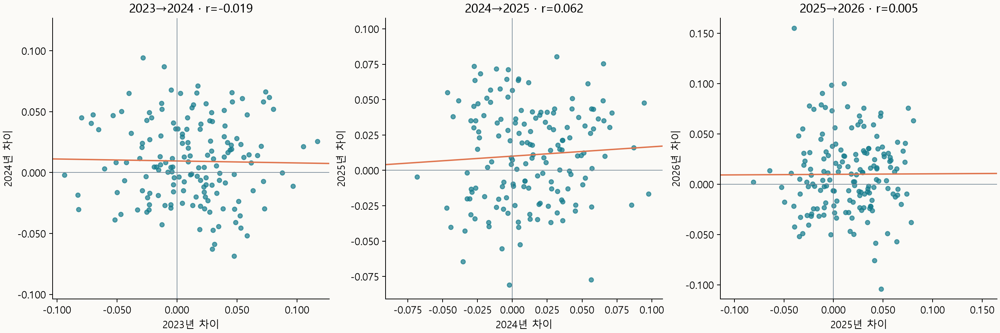

2023~2026 MLB 득점권 타격 비교
평소보다 득점권에서 더 잘 쳤던 선수가 다음 해에도 비슷한 차이를 보였는지 비교했다.
같은 선수
명의
년 기록 비교
비교 시즌
비교 지표
득타율 − 전체 타율
득점권 − 비득점권 타율
전체 타율
득점권 타율
선수 선택
전체 선수
각 점은 같은 선수의 두 시즌 기록입니다. 가로축은 2025년, 세로축은 2026년입니다. 점을 선택하거나 선수 선택 메뉴를 사용하면 상세 기록을 볼 수 있습니다.
2025년 차이 상위 20%
2025년 차이 하위 20%
중간 선수
